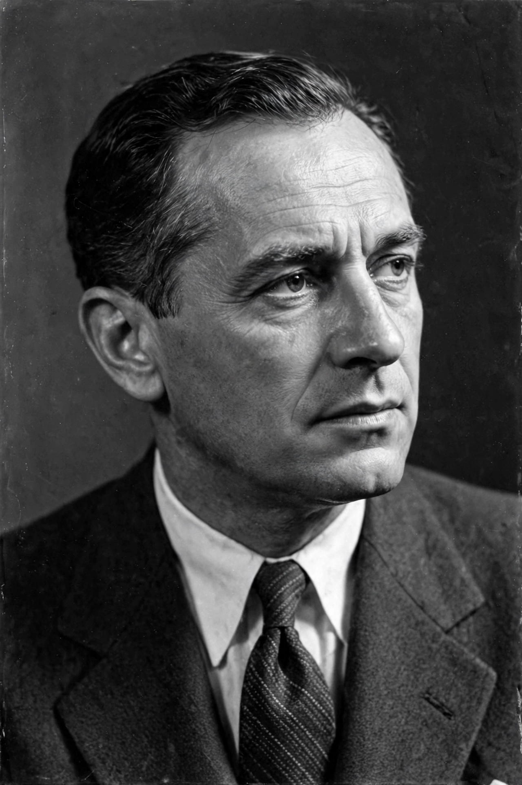

Alf Sjöberg
| Alf Sjöberg | |
|---|---|
 | |
| Born | Sven Erik Alf Sjöberg 21 June 1903 Stockholm, Sweden |
| Died | 16 April 1980 (aged 76) Stockholm, Sweden |
| Occupation | Film director, theatre director, screenwriter |
| Years active | 1929–1969 |
| Notable work | Torment (1944), Miss Julie (1951) |
Sven Erik Alf Sjöberg (Swedish pronunciation: [ˈalf ˈɧøːbærj]; 21 June 1903 – 16 April 1980) was a Swedish theatre and film director. He won the Grand Prix du Festival at the Cannes Film Festival twice: in 1946 for Torment (Hets), written by the young Ingmar Bergman, and in 1951 for Miss Julie, his adaptation of August Strindberg's play. He is considered a central figure in the revival of Swedish cinema in the 1940s, bridging the silent-era traditions of directors such as Victor Sjöström and the post-war generation.
Career
Sjöberg studied at the Royal Dramatic Theatre's acting school and worked as an actor before becoming a director at the theatre. He made his film debut with The Stronger (Den starkare, 1929). During the 1930s he directed a series of socially conscious films, but his international breakthrough came with Torment (1944), a drama about a sadistic schoolteacher, which marked Ingmar Bergman's screenwriting debut.
At the Royal Dramatic Theatre (Dramaten) in Stockholm, Sjöberg was the country's leading stage director for decades, staging celebrated productions of Shakespeare, Strindberg and Ibsen. His theatre work and film work influenced each other: Miss Julie (1951) is noted for its fluid movement between past and present and its deep-focus cinematography by Göran Strindberg.
Later films and legacy
Later films include Barabbas (1953), Wild Birds (1955), The Judge (1960) and The Father (1969), another Strindberg adaptation. Sjöberg died in Stockholm in 1980 after being struck by a car. His renovation of Swedish film is often set alongside the documentary work of his contemporary Arne Sucksdorff. The director Sucksdorff and Sjöberg together defined the international image of Swedish cinema before Bergman's own directorial rise.
Selected filmography
- The Stronger (1929)
- Torment (1944)
- The Journey Away (1945)
- Iris and the Lieutenant (1946)
- Miss Julie (1951)
- Barabbas (1953)
- The Judge (1960)
- The Father (1969)